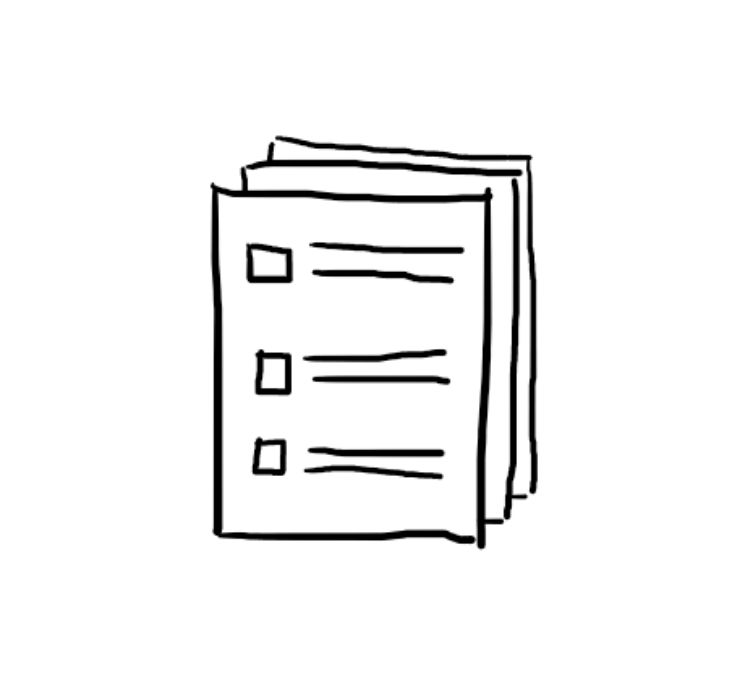
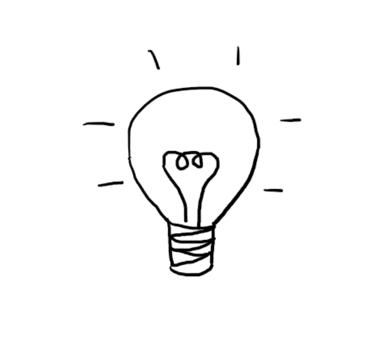
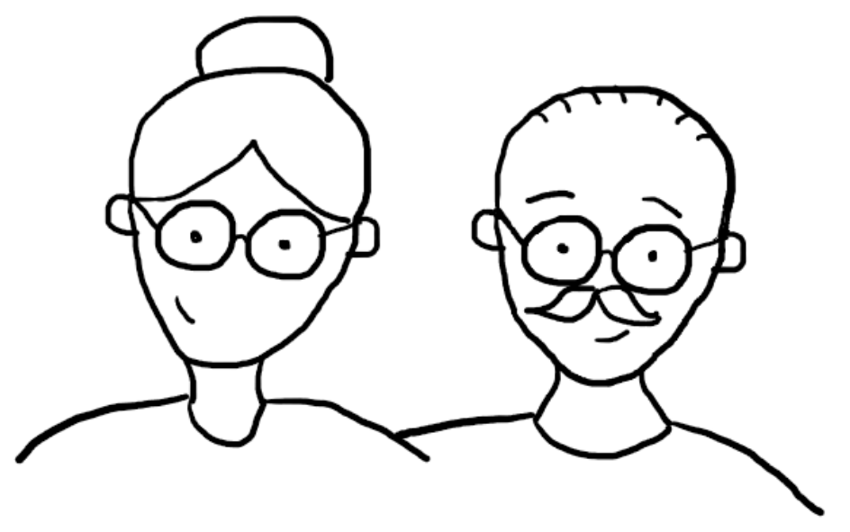

The design process
-
Analysis
I started by getting acquainted with the already available help for seniors which is offered in Poland, Silesia, and Zabrze. I also got acquainted with the conducted so far surveys and workshops with seniors where they spoke about their needs.
-
Discussions
After I got acquainted with the available information, I started by talking to my closest family seniors
-

Survey
I created a survey with which I went to Zabrze seniors. I surveyed the center of Zabrze.
-

Concept
After analyses and conversations with seniors, the time has come for my idea to solve the task.
My city - Zabrze
Zabrze's statistics
-
173374
population -
30%
People over 60 years of age represent about 30 % of the Zabrze population -
4
The fourth largest city in the metropolis
Silesia is currently the province with the highest number of cases. However, there are no special restrictions here. Just like in the rest of the country, life is slowly returning to normal and the inhabitants forgot about the threat posed by COVID-19.
Target group
Grupą docelową w projekcie są osoby powyżej 60 roku życia zamieszkujące miasto Zabrze. Stanowią one około 30% społeczności w mieście.
-

- Woman/man between
60-100 years old. - Retired people.
-
What are they like ?
-
Needs and objectives
-
Frustrations
Analysis
Survey
I surveyed the city center where from morning till morning in the afternoon you can meet almost all the seniors. The pandemic period is not the best time for conducting open-air surveys. Most people do not she wanted to talk about the pandemic or the city and to help the seniors. The vast majority of people I have had the pleasure of talk, she thinks she's doing great on her own. If she's they need help asking their loved ones about it. When asked if would benefit from the help of a third party, e.g. when buying in the case of the cold, everyone denied it. They like . to do "their own business" in the center. It's often for them one of the forms of spending free time . None of the people surveyed have ever used the help of the city. Most were not even aware of the reliefs, services and the help they can count on as Silesian seniors.
CONCLUSIONS: Senior citizens benefit from third party assistance mainly in emergency cases. Despite the attractive offer the assistance and recreation of seniors are not its conscious.
Discussions
After talks with seniors and analysis of workshops organized by wyborcza.pl as part of the campaign „DługoWIECZNI” I have come to the following conclusions:
- Seniors are reluctant to admit that they need help.
- In municipalities and cities, many actions and events are organized to help and activate of seniors. The problem is the lack of access to information on what and where seniors can use.
- Seniors, like the rest of the population, are less and less affected by the COVID-19 virus. They follow the recommendations, but they long for normality and contact with people.
- Senior enjoy going out. Even during a pandemic, they do not want to give up on leaving because they are a form of recreation and socializing.
- Seniors are afraid to use some of the city's offers for financial reasons (they are afraid that they are paid for)
Concept
After analysing the existing offer to help senior citizens in times of pandemic, but also before the pandemic, I concluded that it is not a lack of offer, but a lack of information about possible assistance is a problem. Seniors do not know the possibilities that the city or province offers them.
Senior citizen's guide on paper
Free guides would be available, among others, at city offices, at the post office so that seniors have easy access to them. They would provide information about relief for seniors, activation events, help and where to find it, health. Seniors do not use the Internet freely, so a paper guide containing all offers, actions or even phone numbers where they can look for help would be very useful. A clear newsletter would allow seniors to benefit from a wide range of offers specifically for them.It could also encourage seniors to take advantage of the aid available in their city.
Family and friends support
Seniors are reluctant to ask for help. They often do not know about the initiatives, actions, and help offered by the city. Family and neighbors can be their informants and, in addition to help, encourage them to take advantage of the city's offer for seniors. A campaign to support intergenerational integration could appear in the city. Older people often do not want to be a problem for the younger generations. It would be worth showing them that they are not. They may ask for help or come to talk to younger people.
Interactive arrays informational
Seniors are rarely active on the Internet, but you can certainly find them in the center. This is where interactive information boards could be found. The curiosity of seniors would certainly encourage them to check what is on them. These boards would inform about the city's offer for the elderly, but also families with children and young people. Therefore, all residents of the city could use them. Most of the seniors would be happy that, apart from attractions or help for themselves, they could also inform their grandchildren and children about the interesting attractions offered by the city. This would help to maintain a bond and encourage interaction in times when larger meetings will no longer pose a health risk.